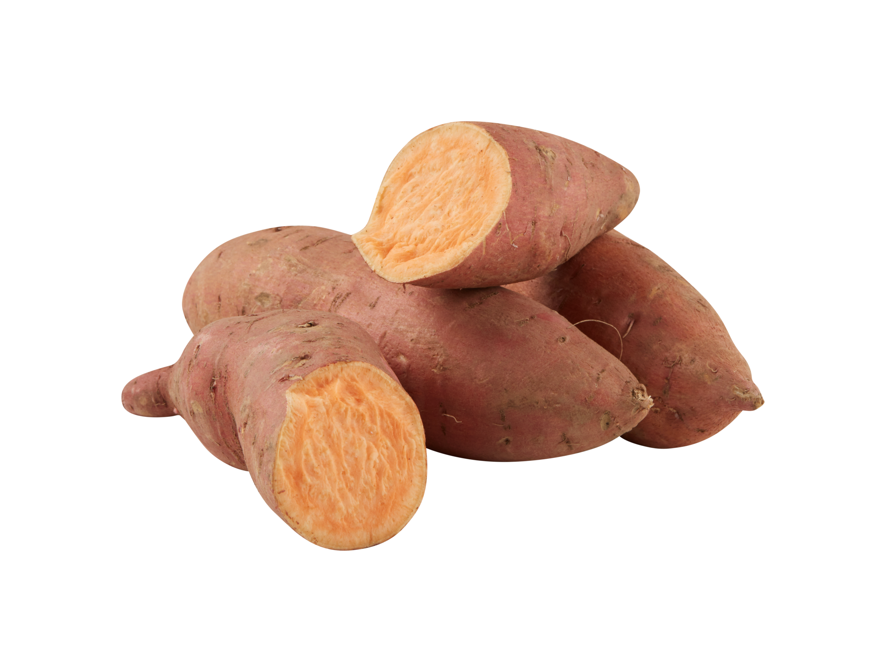
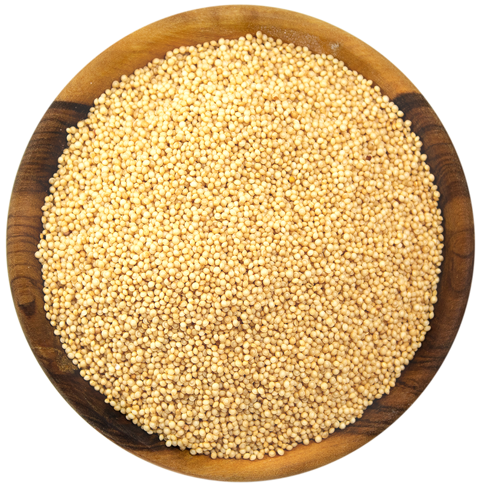
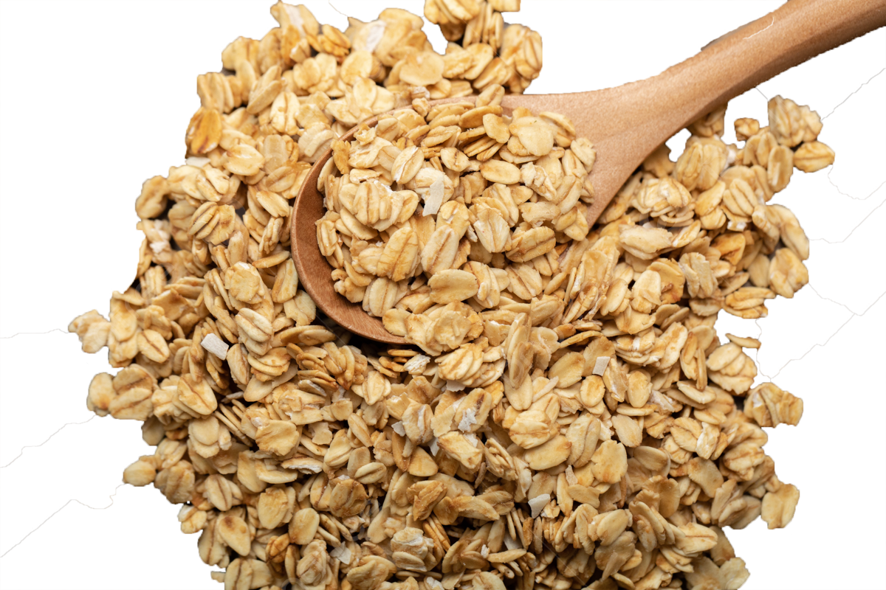

NUESTRO SOBRE CONTIENE 1.2 KG


CAMOTE
El camote se caracteriza por un contenido de: Vitamina A, Vitamina C, Potasio, Vitamina B6, B5 y B3

AMARANTO
El amaranto es un cereal que tiene un alto contenido en: Fibra, Calcio y Vitamina B.

AVENA
La avena es un cereal que se destaca por ser fuente de Proteína, Zinc, Fósforo, Hierro, Magnesio y grasas vegetales no saturadas.

PLÁTANO
El plátano se caracteriza por: Ser una importante fuente de Potasio y Fibra, Vitamina B6, Vitamina C, Ácido fólico.